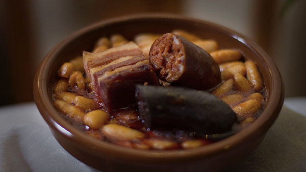

Fabada Asturiana
descriptive paragraph goes here
Ingredients
- Cannelini Beans
- Morcilla
- Bacon
- Spanish Chorizo
- 6 cups of water
Steps
First in large pot, throw the bacon cut in cubes, once all the fat is melted add the spanish chorizo. Let it cook until golden brown; then add the 4 cans of beans and 6 cups of water. Let it cook for about 3o min and add the morcilla; let the morcilla cook for about 15 min and it is ready to serve!